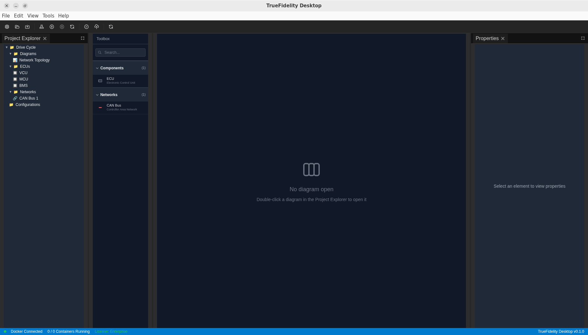
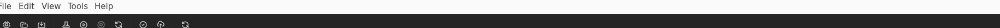
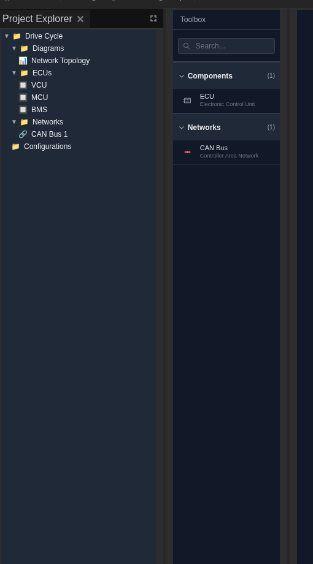
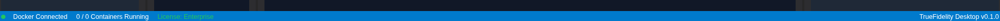
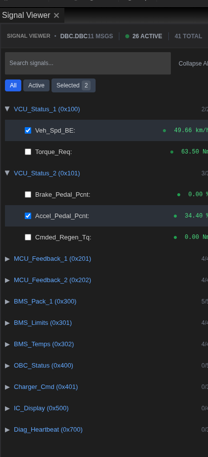

UI Tour¶
This tour introduces the major areas of the TrueFidelity desktop UI as they appear in the default layouts.

1. Menu Bar and Toolbar¶

Menu Bar¶
The menu bar provides top-level actions:
- File – New, Open, Open Recent, Save, Save As, Export Data, Settings, Quit.
- Edit – Standard editing actions for text fields.
- View – Layout switching and Reset Windows.
- Tools – Utility actions when available in your build.
- Help – About and documentation links.
Toolbar¶
The toolbar offers quick access to frequent actions:
- New/Open/Save – System file actions.
- Build System – Prepares firmware and runtime assets.
- Start / Stop – Controls the running system.
- Validate – Checks configuration readiness.
- Refresh – Reloads the UI if needed.
2. Left Sidebar¶

Project Explorer¶
Project Explorer lists the system structure:
- Diagrams – Double-click a diagram to open it on the canvas.
- ECUs / Networks – Element lists that update as you edit the diagram.
- Configurations – System-level configuration entries.
Toolbox¶
Toolbox is a searchable palette of components:
- Drag ECU and Network items onto the canvas.
- Use the search bar to filter component types.
3. Workspace (Center)¶
The workspace hosts dockable panels organized by workflow mode.
System Design Mode¶

- System Canvas – Build ECU topologies and networks.
- Project Explorer / Toolbox / Properties – Surround the canvas for quick edits.
Monitoring Mode¶

- ECU Hardware Status – Table of ECU state and hardware summary.
- ECU Resource Monitor – CPU/memory usage charts per ECU.
- ECU Task Monitor – Process list and stack usage.
- ECU Console – Runtime logs with filter, pause, export, and auto-scroll.
CAN Log Analysis Mode¶

- Signal Viewer – Search and select decoded signals.
- Network Traffic – Live frame table with filters and export.
- Signal Chart – Time-series plots of selected signals.
- Signal Player & Injection – Dataset playback and injection controls.
Panels are dockable. Drag tabs to rearrange layouts or create tab groups.
4. Right Sidebar (Properties)¶

The Properties panel shows configuration for the selected diagram element:
- General – Name, ID, type.
- Configuration – Network type, DBC file, and derived baudrate for CAN.
5. Status Bar¶

- Docker status – Connected/Disconnected indicator.
- Container count – Running vs total containers.
- License status – License tier and state.
- Version – Desktop app version string.
6. Panels Overview¶
System Design Panels¶
- Project Explorer – Diagram and element tree for quick navigation.
- Toolbox – Drag-and-drop components to build the topology.
- System Canvas – Diagram workspace for wiring ECUs to networks.
- Properties – Configuration for selected items.
Monitoring Panels¶

- ECU Hardware Status – ECU state, architecture, board, and memory.
- ECU Resource Monitor – CPU/memory charts per ECU.
- ECU Task Monitor – Process list and stack usage.
- ECU Console – Runtime log stream.
- Terminal – Interactive shell access to ECU containers (when enabled).
CAN Log Analysis Panels¶

- Signal Viewer – Search and select decoded signals.

- Network Traffic – Frame table with filters and export.

- Signal Chart – Plot selected signals and export charts.

- Signal Player & Injection – Dataset selection, channel mapping, playback, and injection controls.
7. Keyboard Navigation Highlights¶
System Design¶
- Ctrl/Cmd + N – New system
- Ctrl/Cmd + O – Open system
- Ctrl/Cmd + S – Save system
- Delete / Backspace – Remove selected ECU or network element (canvas focused)
- Ctrl/Cmd + Z / Shift + Z – Undo/Redo in the canvas
- Ctrl/Cmd + C / V – Copy/Paste selected nodes (canvas focused)
8. Customizing the UI¶
- Drag panel tabs to rearrange.
- Use View → Reset Windows to restore defaults.
- Switch between layouts using View when changing workflows.
9. Where to Go Next¶
- Configure layouts in Workspaces & Layouts.
- Learn playback controls in Playback.
- Explore Filters & Search for panel-specific filtering tips.